Co-op Commander Guide: Fenix
Purifier Executor
Sections on this Page
Commander Summary
Fenix uses a variety of different suits, backed up with an army led by AI Champions to dominate the battlefield.

Level Unlocks
| Level/Icon | Name | Description |
|---|---|---|
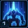 |
Variable Deployment |
Fenix can warp in anywhere on the battlefield using multiple Armor Suit configurations. Armor Suits only regenerate life and energy while not active on the field. The cost of Fenix's combat units is reduced by 20%. |
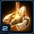 |
Unlock: Purifier Conclave |
Unlocks the Purifier conclave structure, allowing you to research A.I. personalities of Protoss heroes. Once researched, these A.I. Personalities will automatically download into any available host unit. AI Personalities unlocked:
|
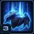 |
Unlock: Cybros Arbiter Suit | Unlocks the Cybros Arbiter suit. The Cybros Arbiter suit can cloak itself and nearby allies, Recall friendly units to its location, and use Stasis to disable enemy units. |
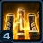 |
Shock Trooper Champion Research Cache |
Unlocks the following upgrades at the Twilight Council:
|
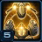 |
Champion AI: Taldarin & Mojo |
Unlocks additional A.I. Personalities at the Purifier Conclave:
|
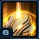 |
Fenix Upgrade Cache |
Unlocks the following upgrades at the Forge:
|
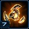 |
New Unit: Disruptor |
Robotic Disruption Unit. Can use Purification Nova to deal heavy area damage. Warped in at the Robotics Facility. Can attack ground units. |
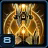 |
Champion AI: Warbringer & Clolarion |
Unlocks additional A.I. Personalities at the Purifier Conclave:
|
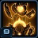 |
Specialist Upgrade Cache |
Unlocks the following upgrades:
|
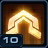 |
Operational Efficiency | Production and tech structures no longer have tech requirements, have their mineral costs reduced by 50%, and have their gas costs reduced by 100%. |
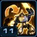 |
Avenging Protocol | Champions gain attack (10% per supply) and movement speed (5% per supply) each time a host shell of their type is destroyed, or a 50% speed increase when they transfer into new host shell. Speed increases can stack up to 200% and last for 20 seconds if not refreshed. |
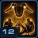 |
Assault Champion Upgrade Cache |
Unlocks the following upgrades:
|
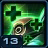 |
Rapid Recharge | Fenix Armor Suits that are currently offline regenerate health and shields 20% faster. |
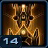 |
Siege Champion Upgrade Cache |
Unlocks the following upgrades:
|
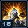 |
Tactical Data Web | Each A.I. Champion's special ability gains a bonus for each active host shell of the same type (up to 20 supply). |
Highlighted rows denote large power spikes for the commander.
Achievements
The commander-specific achievements for Fenix are:
| Achievement | Name | Description |
|---|---|---|
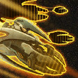 |
Carrier Me | Warp in 4 Carriers and complete the Clolarion A.I. research within the first 10 minutes of a Co-op Mission. |
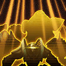 |
Champions Assemble | Have all 6 champions on the battlefield simultaneously during a Co-op Mission. |
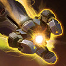 |
Suit Up! | Deal 300,000 damage with Fenix in Co-op Missions. |
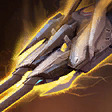 |
The A.I. Personality Test | Deal 300,000 damage with champions in Co-op Missions. |
Fenix Suits
Coolup time: 4:00
Instead of calldowns, Fenix can deploy one of three different Armor Suits onto the battlefield at any location with vision. There is a 15 second cooldown for suit deployment. Should a suit be destroyed, there is a 180 second cooldown before it can be used again. Each suit is designed for a particular purpose and has its own abilities. These are shown below:
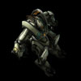
Praetor Armor
| Ability | Name | Description | Cooldown | Energy Cost |
|---|---|---|---|---|
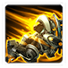 |
Thunderous Charge | Fenix charges at the target location, dealing 50 damage and stunning all enemies for 5 seconds. | 10 seconds | 25 |
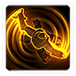 |
Whirlwind | All nearby enemies take 70 damage per second for 3 seconds. Fenix can move while Whirlwind is active. | 10 seconds | 50 |
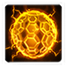 |
Shield Capacitor | Fully restores Fenix's shields. autocasting activates Shield Capacitor when Fenix's shields have been depleted. | 5 seconds | 100 |
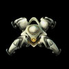
Solarite Dragoon
| Ability | Name | Description | Cooldown | Energy Cost |
|---|---|---|---|---|
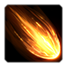 |
Solar Cannon | Fires a piercing beam that deals 100 damage to all enemy ground units in its path. | 6 seconds | 50 |
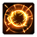 |
Solarite Flare | Fires an air bursting flare that deals 100 damage to enemy air units. | 10 seconds | 50 |
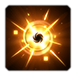 |
Arsenal Overcharge | Activating Arsenal Overcharge causes your damaging abilities to have no cooldown for 10 seconds. | 120 seconds | 0 |
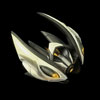
Cybros Arbiter
| Ability | Name | Description | Cooldown | Energy Cost |
|---|---|---|---|---|
| Stasis Field | Places enemy units in target area into stasis for 15 seconds. Units in stasis cannot move, attack, be attacked or be affected by abilities. | 10 seconds | 50 | |
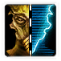 |
Enable Cloaking Field | Enable Cloaking Field, cloaking friendly units near Fenix. Costs 5 Energy per second to maintain. | 0 seconds | 5 |
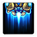 |
Recall | Teleports all friendly units in the target area to the location of the Arbiter. | 0 seconds | 100 |
The upgrades for Fenix are:
| Upgrade | Name | Effect |  / / |
Research Time |
|---|---|---|---|---|
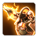 |
Purifier Armaments | All Fenix Armor Suits gain +15 attack damage. | 75/75 | 90 seconds |
| Observation Protocol | Grants Fenix's Cybros Arbiter Suit detection, allowing him to detect cloaked enemies. | 50/50 | 60 seconds | |
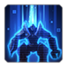 |
A Strong Heart | "I no longer wish to be called by the name Fenix.". Renames "Fenix" to "Talandar". Purely aesthetic. | 13/13 | 10 seconds |
Sub-Ascension Leveling
Difficulty: Easy
Use a mix of units, focusing Adept/Immortal/Carrier during early stages of leveling. Make sure you rely on your Fenix suit abilities as much as possible, to increase the survivability of your army.
While leveling through Mastery levels, allocate points into Power Set 3's Initial Starting Supply mastery if you choose to use it.
Masteries
Below are the three Power Sets for Fenix with the recommended point allocations for each. Note that these are meant to serve a general, all-purpose build that is effective across all maps with no Prestiges selected. You are highly encourged to change these masteries to suit your playstyle and particular challenges you face (e.g. Weekly Mutations).
Power Set 1:
| Power | Value | Recommended Points to Add | Further Considerations |
|---|---|---|---|
| Fenix Suit Attack Speed | 2% per point 60% maximum |
? | If a player actively switches suits often, draining their energy completely with each use, they should consider the Energy Regeneration of the suit. |
| Fenix Suit Offline Energy Regeneration | 0.75% per point 22.5% maximum |
? |
This is a matter of preference, and will depend on your playstyle. If you use Fenix to deal with attack waves, the Energy Regeneration is recommended. However, the Attack Speed mastery is useful when using Fenix combined with your army.
Power Set 2:
| Power | Value | Recommended Points to Add | Further Considerations |
|---|---|---|---|
| Champion A.I. Attack Speed | 1% per point 30% maximum |
? | Champion A.I's are extremely powerful and the decision here comes down to ensure they should be able to tank, or if they should be the core damage dealers in Fenix's army. |
| Champion A.I Life and Shields | 2% per point 60% maximum |
? |
This mastery is a matter of preference. The Life and Shield mastery can give Champions like Kaldalis a lot of health, while the Attack Speed mastery can give Champions a lot of additional DPS.
Power Set 3:
| Power | Value | Recommended Points to Add | Further Considerations |
|---|---|---|---|
| Chrono Boost Efficiency | 1% per point 30% maximum |
27 | The extra starting supply can help Fenix focus on rushing out army units and workers faster, by reducing the initial cost commitment to building pylons. However, this has a permanent effect of slowing him down during the later stages of the game due to a weaker Chrono Boost. |
| Extra Starting Supply | 2 per point 60 maximum |
3 |
The point allocation above is provided as a starting point. Depending on the efficiency of your macro, more points in the starting supply will reduce your need to build Pylons, while Chrono Boost efficiency can reduce the time it takes to get out your first Champion.
Prestiges
Below are the prestiges for Fenix. Note that "Effective Level" is the level at which the prestige achieves it full effect.
| Level | Name | Description | Effective Level | Notes |
|---|---|---|---|---|
| 1 | Akhundelar |
|
1 |
|
| Akhundelar allows Fenix to clear entire enemy bases by using carefully-placed abilities. The prestige is extremely powerful, but knowledge of enemy bases and units within them is important to ensure the player selects the correct suit for handling the base. Additionally, losing a suit, especially the Solarite Dragoon can be extremely punishing. The prestige also taxes player's macro abilities because (assuming optimal play) players will be micro'ing suits 50% of the time. | ||||
| Level | Name | Description | Effective Level | Notes |
|---|---|---|---|---|
| 2 | Network Administrator |
|
15 |
|
| This prestige requires a unique playstyle for Fenix. The idea is to have Fenix and his Champion A.I's alongside him on the front line, pushing into enemy bases and dealing with attack waves. Behind them, but away from the heat of the battle, the shells provide quick reinforcements for A.I's once they die on the frontline. Pushing in with the shell army will cause the player to take heavy losses, so adequate management of control groups is a must. | ||||
Effectiveness Bonuses:
- Kaldalis Empowered Blades damage bonus per shell tripled
- Talis Ricochet Glaive damage bonus per shell tripled
- Taldarin Gravimetric Overload damage storage bonus per shell tripled
- Warbringer Purification Blast damage bonus per shell tripled
- Mojo Suppression Procedure damage bonus per shell tripled
- Clolarion Interdictor damage bonus per shell tripled
| Level | Name | Description | Effective Level | Notes |
|---|---|---|---|---|
| 3 | Unconquered Spirit |
|
11 |
|
| This prestige encourages players to take advantage of Avenging Protocol by reducing the Champion A.I. vitality and attack ranges. This forces them to the frontline and makes them easier to kill by Amon's forces. While in theory, this strategy may work, one of the issues that players will face with this prestige is the issue of body-blocking. As A.I Champions get transferred to a new shell, they might find themselves at the back of the army, meaning that Avenging Protocol may wear off by the time they push through to the front to fight. This prestige works well with the Champion A.I attack speed mastery. | ||||
Effectiveness Bonuses:
- Avenging Protocol Attack Speed Bonus doubled
- Avenging Protocol Movement Speed Bonus doubled
For general play, Akhundelar is a good prestige to use. If the player prefers to have an untimed Fenix, they may play without a Prestige Talent selected. For a more challenging play experience, players may try to use Network Administrator.
Recommended Army Composition
The recommended army composition for Fenix is below. Note that this assumes no Prestige talent selected and recommended Mastery Allocations. This is a basic recommendation for your army framework. It is recommended to gain an understanding for each of the units in the Units section and further add tech units so that you are able to better handle the situations you face.
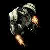
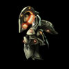
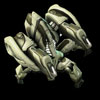
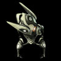
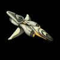
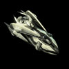
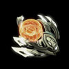
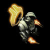
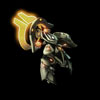
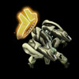
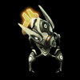
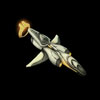
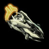
You should be making the full complement of Fenix's units to take advantage of the very powerful Champion AI's along with their Tactical Data Web. Use Conservators to reduce damage taken by your army before you take engagements.
Combat Units
For more information on Fenix's unit stats, comparison between units and upgrade calculations, visit the Data Tables page.
Fenix's combat units are listed below:
Legionnaire
- Relatively ineffective unit.
- Generally recommended to make a small number to provide shells for the Kaldalis AI.
Skills:
| Skill | Name | Description | Cooldown | Energy Cost |
|---|---|---|---|---|
 |
Charge | Intercepts enemy ground units and increases movement speed. | 10 seconds | 0 |
Upgrades:
| Upgrade | Name | Effect | / |
Research Time |
|---|---|---|---|---|
 |
Charge | Allows Legionnaires to intercept nearby enemies. Also increases the movement speed of Legionnaires by 0.25. | 100/100 | 60 seconds |
Adept
- Should be the core of Fenix's army.
- Cheap but very effective unit.
Skills: None
Upgrades:
| Upgrade | Name | Effect | / |
Research Time |
|---|---|---|---|---|
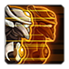 |
Psionic Projection | Attacks summon an invulnerable Shade that will attack enemies for a short time for 33% damage per shot, 3 shots total. | 50/50 | 60 seconds |
Conservator
- A must-have in any army composition.
- Protective Field reduces all incoming damage to your units.
- Phasing mode can allow for quick warp reinforcements.
- Recommended to have at least three in your army for constant Protective Fields.
Skills:
| Skill | Name | Description | Cooldown | Energy Cost |
|---|---|---|---|---|
| Protective Field | Creates a shield that reduces all incoming attack damage to friendly units by 35%. Lasts 15 seconds. | 20 seconds | 0 |
Upgrades:
| Upgrade | Name | Effect | / |
Research Time |
|---|---|---|---|---|
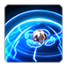 |
Optimized Emitters | Increases the duration of the Conservator's Protective Field by 100%. | 50/50 | 60 seconds |
Immortal
- Powerful, high-damage unit.
- Recommended to always have them in most of your builds.
- Great units to counter armored units.
Skills:
| Skill | Name | Description | Cooldown | Energy Cost |
|---|---|---|---|---|
 |
Barrier | Absorbs up to 100 damage. Lasts for 10 seconds. | 60 seconds | 0 |
Upgrades: None
Colossus
- Build a very small number of them.
- Splash damage works best against zerg builds.
Skills: None
Upgrades:
| Upgrade | Name | Effect | / |
Research Time |
|---|---|---|---|---|
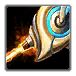 |
Extended Thermal Lance | Colossi gain +3 range. | 100/100 | 90 seconds |
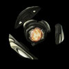
Disruptor
- Extremely niche unit.
- High burst damage.
- Generally not worth making as other units can out-perform them for a lower cost.
Skills:
| Skill | Name | Description | Cooldown | Energy Cost |
|---|---|---|---|---|
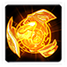 |
Purification Nova | Shoots out a ball of energy that emits a powerful nova dealing 150 splash damage and an additional 50 shield damage to nearby ground units and structures. | 20 seconds | 0 |
Upgrades:
| Upgrade | Name | Effect | / |
Research Time |
|---|---|---|---|---|
| Cloaking Module | Permanently cloaks all Disruptors. | 50/50 | 60 seconds | |
| Purification Echo | The Disruptor's Purification Nova explodes again after 2 seconds, dealing 75 damage in a larger area. | 75/75 | 90 seconds |
Scout
- Does bonus damage to light ground units making them highly effective on infested maps.
- Does bonus damage to armored air units.
Skills: None
Upgrades:
| Upgrade | Name | Effect | / |
Research Time |
|---|---|---|---|---|
| Combat Sensor Array | Scouts gain +3 air attack range and +1 ground attack range. | 50/50 | 60 seconds |
Carrier
- Interceptors can mess with enemy AI, providing for a great distraction.
Skills:
| Skill | Name | Description | Cooldown | Energy Cost |
|---|---|---|---|---|
| Build Interceptor | Builds Interceptors that automatically attack the Carrier's target. Carriers may not attack without Interceptors. Can attack ground and air units. 8 Interceptors max. |
15s | 0 |
Upgrades:
| Upgrade | Name | Effect | / |
Research Time |
|---|---|---|---|---|
| Graviton Catapult | Makes the Carrier launch Interceptors more quickly by 100%. | 150/150 | 80 seconds |
Champion A.I.'s
Kaldalis
- Hero Zealot.
- Very powerful with Avenging Protocol.
- Empowered Blades Cleave damage applies to primary target as well.
- Take full advantage of Tactical Data web when using Prestiges.
Skills:
| Skill | Name | Description | Cooldown | Energy Cost |
|---|---|---|---|---|
| Engage | Kaldalis intercepts the target unit. | 5s | 0 |
Upgrades:
| Upgrade | Name | Effect | / |
Research Time |
|---|---|---|---|---|
| Empowered Blades | Kaldalis' attacks deal area damage. | 50/50 | 60 seconds |
Talis
- Hero Adept.
- "Ricochet Glaive" upgrade is highly recommended because it causes enemies to take significantly more damage from your units.
Skills:
| Skill | Name | Description | Cooldown | Energy Cost |
|---|---|---|---|---|
| Ricochet Glaive | An amplified Glaive that ricochets and hits up to 3 enemy units for 25 (35 vs Light) damage each. | 5 seconds | 0 |
Upgrades:
| Upgrade | Name | Effect | / |
Research Time |
|---|---|---|---|---|
| Debilitation System | Talis' Ricochet Glaive bounces 5 additional times and causes every unit hit by Ricochet Glaive to take 5 additional damage for 5 seconds. | 50/50 | 60 seconds |
Taldarin
- Hero Immortal.
- Should be your first Champion out to clear rocks (along with Fenix if the expansion is contested).
- Synergizes well with splash damage as his auto-attacks pulls enemies closer together.
Skills:
| Skill | Name | Description | Cooldown | Energy Cost |
|---|---|---|---|---|
|
Barrier | Absorbs up to 200 damage. Lasts for 10 seconds. | 60 seconds | 0 |
Upgrades:
| Upgrade | Name | Effect | / |
Research Time |
|---|---|---|---|---|
| Gravimetric Overload | Taldarin's attacks store 25% of the damage dealt on the target. When that unit is killed, it explodes, dealing all of the stored damage to nearby enemy units. | 75/75 | 90 seconds |
Warbringer
- Hero Colossus.
- Auto-attacks slows down enemy units.
- Should be the second Champion out to help with early attack waves and pushing.
Skills:
| Skill | Name | Description | Cooldown | Energy Cost |
|---|---|---|---|---|
| Purification Blast | Fire a devastating blast that deals 150 damage the target unit. | 5 seconds | 0 |
Upgrades:
| Upgrade | Name | Effect | / |
Research Time |
|---|---|---|---|---|
| Purification Blast | Warbringer fires a devastating blast that deals 150 damage the target unit. | 75/75 | 90 seconds |
Mojo
- Hero Scout.
- Auto-attacks stuns enemy air units for 2 seconds.
- Useful for disabling air spellcasters like Battlecruisers.
Skills:
| Skill | Name | Description | Cooldown | Energy Cost |
|---|---|---|---|---|
| Suppression Procedure | Fire a barrage of Anti-Matter Missiles, dealing 6 (12 vs Armored) area damage and stunning nearby enemy air units for 1 second. | 5s | 0 |
Upgrades:
| Upgrade | Name | Effect | / |
Research Time |
|---|---|---|---|---|
| Combat Sensor Array | Scouts gain +3 air attack range and +1 ground attack range. | 50/50 | 60 seconds | |
| Suppression Procedure | Mojo fires a barrage of Anti-Matter Missiles, dealing area damage and stunning nearby enemy air units for 1 second. | 50/50 | 60 seconds |
Clolarion
- Hero Carrier.
- Solar Beam can only target enemy air units.
- Very tanky unit that can be brought to the front of your army for pushes.
Skills:
| Skill | Name | Description | Cooldown | Energy Cost |
|---|---|---|---|---|
| Build Interceptor | Builds Interceptors that automatically attack the Carrier's target. Carriers may not attack without Interceptors. Can attack ground and air units. 8 Interceptors max. |
15s | 0 | |
| Build Interdictor | Builds Interdictors that automatically bomb enemy ground units for 12 damage. Can attack ground units. |
15s | 0 |
Upgrades:
| Upgrade | Name | Effect | / |
Research Time |
|---|---|---|---|---|
| Interdictors | In addition to his Interceptors, Clorarion deploys 2 Interdictors that automatically bomb enemy ground units. | 75/75 | 90 seconds |
The below table lists out the effects of Tactical Data Web on the Champion A.I.'s:
| Champion | Affected Ability | Ability Description | Tactical Data Web Effect | Shells |
|---|---|---|---|---|
| Kaldalis | Empowered Blades | Kaldalis attacks deal 9 damage to nearby enemy targets. | Empowered Blades deal an additional 4.5 damage for each networked Legionnaire (up to 30 damage). | 7 |
| Talis | Ricochet Glaive | An amplified glaive that ricochets and hits up to 3 enemy units for 25 (35 vs light) damage each. 5 second cooldown. | Ricochet Glaive's does an additional 2.5 (3.5 vs Light) damage for each networked Adept (up to 25 (35 vs Light) damage). | 10 |
| Taldarin | Gravimetric Overload | Each attack stores 25% of the damage dealt on the target. When that unit is killed, it explodes, dealing all of the stored damage to nearby enemies. | Gravimetric Overload stores 10% additional damage per attack for each networked Immortal (up to 50% damage). | 5 |
| Warbringer | Purification Blast | Fires a devastating blast that deals 150 damage to the target unit. 5 second cooldown. | Purification Blast does an additional 45 damage for each networked Colossus (up to 150 damage). | 4 |
| Mojo | Suppression Procedure | Fires a barrage of Anti-Matter missiles, dealing 6 (12 vs armored) area damage and stunning nearby enemy air units for 1 seconds. 5 second cooldown. | Suppression Procedure does an additional 0.9 (1.8 vs Armored) damage for each networked Scout (up to 6 (12 vs Armored) damage). | 7 |
| Clolarion | Interdictors | Automatically bombs enemy ground units for 12 damage. | Interdictor damage is increased by 3 for each networked Carrier (up to 10 damage). | 4 |
Build Order
Below is the standard economic build order for Fenix. For more information on how to read and construct your own build orders, please check the Build Order Theory page.
15 Pylon
16 Assimilator
17 Robotics Facility
17 Assimilator
22 Immortal + AI -> Rocks
26 Pylon
31 Nexus
Gameplay Guide
Playstyle Traps
A lot of Fenix players will attempt to rush Carriers. This is due to the lack of Tech requirements for Fenix. A player can simply build a Stargate and a Fleet Beacon (at the same time) without having to build a Gateway or a Cybernetics Core. Additionally, Carriers are end-game units that can swarm the enemy when massed. However, the downside to this rush is it significantly slows down the player from expanding - something which is extremely important when trying to mass carriers. Additionally, it foregoes Fenix's other champions, which are extremely powerful in their own right. It is much more effective to do a 6-champion build with a mix of units.
Playstyle Tips
- Get Taldarin out as soon as possible to clear your expansion. Back him up with Fenix if the expansion is contested.
- It is recommended to build 6 gateways to provide you with your Adepts.
- Aim to only have one Legionnaire (Kaldalis) out at a time to take advantage of the Avenging Protocol stacks.
- Use the Conservator Protective Field whenever you want to push into enemy bases.
- Keep changing Fenix Armor Suits so that you are using the one that most effectively serves your need.
- When using the Praetor Armor, ensure you disable the Whirlwind ability from autocast as this wastes energy and would be much better used if manually controlled.
- Kaldalis and Warbringer can be limited in terms of their attack speed. The video below explains this further: